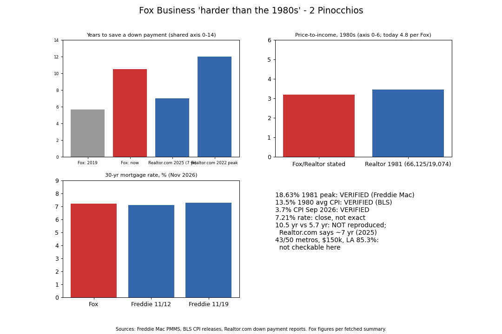

Fox Business home-affordability piece: 2 Pinocchios

Summary of findings
Two Pinocchios. The historical facts (18.63% mortgage rate in 1981, 13.5% 1980 inflation, 3.7% CPI in Sept 2026) check out. The headline 10.5-year down-payment figure, tripled from 1980s, could not be reproduced: Realtor.com published about 7 years for 2025 (12 years peak in 2022), roughly double pre-pandemic.
- Verified: 18.63% (Freddie Mac, Oct 1981); 1980 CPI average 13.5% (BLS); CPI 3.7% y/y Sept 2026 (October release not checked).
- Close: 7.21% mortgage rate; Freddie Mac read 7.11% (Nov 12) and 7.28% (Nov 19).
- Contradicted or unsupported: 10.5 years vs 5.7 in 2019; I found no Realtor.com source and its published figure is lower. 3.2x 1980s price-to-income vs 3.47x from Realtor.com's 1981 numbers ($66,125 / $19,074).
- Not checkable here: 43 of 50 metros over 30%, LA 85.3%, San Diego 64.8%, $150,000 lost buying power, price fivefold vs income fourfold, Hannah Jones quote.
- Misleading by omission: 1981 monthly payments were far higher at 18% rates; prices vs payments is a trade-off, and Realtor.com's own 2023 analysis said 1981 was less affordable by borrowing cost.
Caveat: article text came via a summarizing fetch tool, not verbatim. A fuller source could change the grade.
Sources
- https://www.foxbusiness.com/economy/why-buying-home-harder-today-than-1980s
- https://www.freddiemac.com/pmms
- https://www.bls.gov/news.release/archives/cpi_10142026.htm
- https://www.rismedia.com/2025/12/30/realtor-com-saving-for-down-payment/
- https://www.builderonline.com/?p=88956